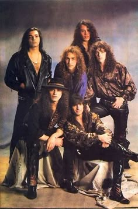
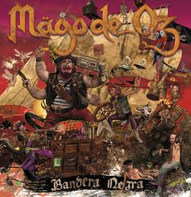
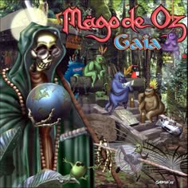
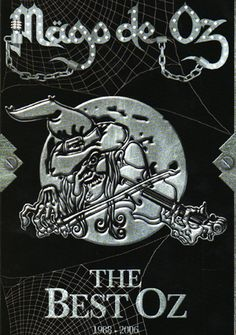
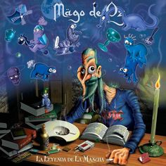

|  |
Mägo de
Oz es una banda española de folk metal y rock formada en 1988 en Madrid
por el baterista Txus di Fellatio. Su estilo combina heavy metal, power
metal y música celta, con letras inspiradas en la literatura, la
fantasía y temas filosóficos o sociales. Al principio, la banda tenía un sonido más cercano al hard rock, pero con el tiempo evolucionaron hacia un estilo único que mezcla guitarras eléctricas con instrumentos como el violín y la flauta. Alcanzaron la fama con álbumes conceptuales como Jesús de Chamberí (1996) y La Leyenda de la Mancha (1998), pero su mayor éxito llegó con Finisterra (2000), que los consolidó como una de las bandas más importantes del rock en español. Su disco más emblemático, Gaia (2003), inició una trilogía con una historia compleja y un sonido épico. A lo largo de los años, han pasado por varios cambios de vocalistas, siendo José Andrea (1996-2011) el más recordado por los fans. A pesar de estos cambios, siguen activos y con una gran base de seguidores en toda España y Latinoamérica. |
|  |
 |
 |
 |